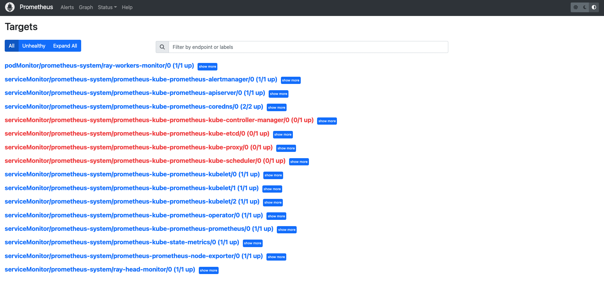
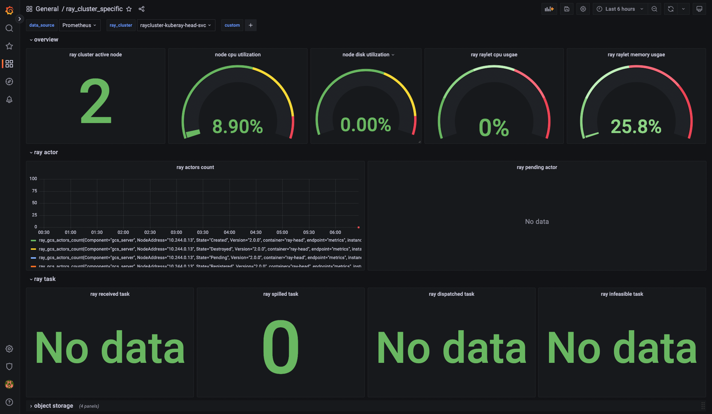

Ray Cluster: Monitoring with Prometheus & Grafana¶
This section will describe how to monitor Ray Clusters in Kubernetes using Prometheus & Grafana.
If you do not have any experience with Prometheus and Grafana on Kubernetes, I strongly recommend you watch this YouTube playlist.
Step 1: Create a Kubernetes cluster with Kind.¶
kind create cluster
Step 2: Install Kubernetes Prometheus Stack via Helm chart¶
# Path: kuberay/
./install/prometheus/install.sh
# Check the installation
kubectl get all -n prometheus-system
# (part of the output)
# NAME READY UP-TO-DATE AVAILABLE AGE
# deployment.apps/prometheus-grafana 1/1 1 1 46s
# deployment.apps/prometheus-kube-prometheus-operator 1/1 1 1 46s
# deployment.apps/prometheus-kube-state-metrics 1/1 1 1 46s
- KubeRay provides an install.sh script to install the kube-prometheus-stack chart and related custom resources, including ServiceMonitor, PodMonitor and PrometheusRule, in the namespace
prometheus-systemautomatically.
Step 3: Install a KubeRay operator¶
- Follow this document to install the latest stable KubeRay operator via Helm repository.
Step 4: Install a RayCluster¶
helm install raycluster kuberay/ray-cluster --version 0.5.0
# Check ${RAYCLUSTER_HEAD_POD}
kubectl get pod -l ray.io/node-type=head
# Example output:
# NAME READY STATUS RESTARTS AGE
# raycluster-kuberay-head-btwc2 1/1 Running 0 63s
# Wait until all Ray Pods are running and forward the port of the Prometheus metrics endpoint in a new terminal.
kubectl port-forward --address 0.0.0.0 ${RAYCLUSTER_HEAD_POD} 8080:8080
curl localhost:8080
# Example output (Prometheus metrics format):
# # HELP ray_spill_manager_request_total Number of {spill, restore} requests.
# # TYPE ray_spill_manager_request_total gauge
# ray_spill_manager_request_total{Component="raylet",NodeAddress="10.244.0.13",Type="Restored",Version="2.0.0"} 0.0
# Ensure that the port (8080) for the metrics endpoint is also defined in the head's Kubernetes service.
kubectl get service
# NAME TYPE CLUSTER-IP EXTERNAL-IP PORT(S) AGE
# raycluster-kuberay-head-svc ClusterIP 10.96.201.142 <none> 6379/TCP,8265/TCP,8080/TCP,8000/TCP,10001/TCP 106m
- KubeRay will expose a Prometheus metrics endpoint in port 8080 via a built-in exporter by default. Hence, we do not need to install any external exporter.
- If you want to configure the metrics endpoint to a different port, see kuberay/#954 for more details.
- Prometheus metrics format:
# HELP: Describe the meaning of this metric.# TYPE: See this document for more details.
Step 5: Collect Head Node metrics with a ServiceMonitor¶
apiVersion: monitoring.coreos.com/v1
kind: ServiceMonitor
metadata:
name: ray-head-monitor
namespace: prometheus-system
labels:
# `release: $HELM_RELEASE`: Prometheus can only detect ServiceMonitor with this label.
release: prometheus
spec:
jobLabel: ray-head
# Only select Kubernetes Services in the "default" namespace.
namespaceSelector:
matchNames:
- default
# Only select Kubernetes Services with "matchLabels".
selector:
matchLabels:
ray.io/node-type: head
# A list of endpoints allowed as part of this ServiceMonitor.
endpoints:
- port: metrics
targetLabels:
- ray.io/cluster
- The YAML example above is serviceMonitor.yaml, and it is created by install.sh. Hence, no need to create anything here.
- See ServiceMonitor official document for more details about the configurations.
release: $HELM_RELEASE: Prometheus can only detect ServiceMonitor with this label.
helm ls -n prometheus-system
# ($HELM_RELEASE is "prometheus".)
# NAME NAMESPACE REVISION UPDATED STATUS CHART APP VERSION
# prometheus prometheus-system 1 2023-02-06 06:27:05.530950815 +0000 UTC deployed kube-prometheus-stack-44.3.1 v0.62.0
kubectl get prometheuses.monitoring.coreos.com -n prometheus-system -oyaml
# serviceMonitorSelector:
# matchLabels:
# release: prometheus
# podMonitorSelector:
# matchLabels:
# release: prometheus
# ruleSelector:
# matchLabels:
# release: prometheus
-
namespaceSelectorandseletorare used to select exporter's Kubernetes service. Because Ray uses a built-in exporter, the ServiceMonitor selects Ray's head service which exposes the metrics endpoint (i.e. port 8080 here).kubectl get service -n default -l ray.io/node-type=head # NAME TYPE CLUSTER-IP EXTERNAL-IP PORT(S) AGE # raycluster-kuberay-head-svc ClusterIP 10.96.201.142 <none> 6379/TCP,8265/TCP,8080/TCP,8000/TCP,10001/TCP 153m -
targetLabels: We addedspec.targetLabels[0].ray.io/clusterbecause we want to include the name of the RayCluster in the metrics that will be generated by this ServiceMonitor. Theray.io/clusterlabel is part of the Ray head node service and it will be transformed into aray_io_clustermetric label. That is, any metric that will be imported, will also contain the following labelray_io_cluster=<ray-cluster-name>. This may seem optional but it becomes mandatory if you deploy multiple RayClusters.
Step 6: Collect Worker Node metrics with PodMonitors¶
KubeRay operator does not create a Kubernetes service for the Ray worker Pods, therefore we cannot use a Prometheus ServiceMonitor to scrape the metrics from the worker Pods. To collect worker metrics, we can use Prometheus PodMonitors CRD instead.
Note: We could create a Kubernetes service with selectors a common label subset from our worker pods, however, this is not ideal because our workers are independent from each other, that is, they are not a collection of replicas spawned by replicaset controller. Due to that, we should avoid using a Kubernetes service for grouping them together.
apiVersion: monitoring.coreos.com/v1
kind: PodMonitor
metadata:
name: ray-workers-monitor
namespace: prometheus-system
labels:
# `release: $HELM_RELEASE`: Prometheus can only detect PodMonitor with this label.
release: prometheus
ray.io/cluster: raycluster-kuberay # $RAY_CLUSTER_NAME: "kubectl get rayclusters.ray.io"
spec:
jobLabel: ray-workers
# Only select Kubernetes Pods in the "default" namespace.
namespaceSelector:
matchNames:
- default
# Only select Kubernetes Pods with "matchLabels".
selector:
matchLabels:
ray.io/node-type: worker
# A list of endpoints allowed as part of this PodMonitor.
podMetricsEndpoints:
- port: metrics
-
release: $HELM_RELEASE: Prometheus can only detect PodMonitor with this label. See here for more details. -
PodMonitor in
namespaceSelectorandselectorare used to select Kubernetes Pods.kubectl get pod -n default -l ray.io/node-type=worker # NAME READY STATUS RESTARTS AGE # raycluster-kuberay-worker-workergroup-5stpm 1/1 Running 0 3h16m -
ray.io/cluster: $RAY_CLUSTER_NAME: We also definemetadata.labelsby manually addingray.io/cluster: <ray-cluster-name>and then instructing the PodMonitors resource to add that label in the scraped metrics viaspec.podTargetLabels[0].ray.io/cluster.
Step 7: Collect custom metrics with Recording Rules¶
Recording Rules allow us to precompute frequently needed or computationally expensive PromQL expressions and save their result as custom metrics. Note this is different from Custom Application-level Metrics which aim for the visibility of ray applications.
apiVersion: monitoring.coreos.com/v1
kind: PrometheusRule
metadata:
name: ray-cluster-gcs-rules
namespace: prometheus-system
labels:
# `release: $HELM_RELEASE`: Prometheus can only detect Recording Rules with this label.
release: prometheus
spec:
groups:
- # Rules within a group are run periodically with the same evaluation interval(30s in this example).
name: ray-cluster-main-staging-gcs.rules
# How often rules in the group are evaluated.
interval: 30s
rules:
- # The name of the custom metric.
# Also see best practices for naming metrics created by recording rules:
# https://prometheus.io/docs/practices/rules/#recording-rules
record: ray_gcs_availability_30d
# PromQL expression.
expr: |
(
100 * (
sum(rate(ray_gcs_update_resource_usage_time_bucket{container="ray-head", le="20.0"}[30d]))
/
sum(rate(ray_gcs_update_resource_usage_time_count{container="ray-head"}[30d]))
)
)
-
The PromQL expression above is: $$\frac{ number of update resource usage RPCs that have RTT smaller then 20ms in last 30 days }{total number of update resource usage RPCs in last 30 days } \times 100 $$
-
The recording rule above is one of rules defined in prometheusRules.yaml, and it is created by install.sh. Hence, no need to create anything here.
-
See PrometheusRule official document for more details about the configurations.
-
release: $HELM_RELEASE: Prometheus can only detect PrometheusRule with this label. See here for more details. -
PrometheusRule can be reloaded at runtime. Use
kubectl apply {modified prometheusRules.yaml}to reconfigure the rules if needed.
Step 8: Define Alert Conditions with Alerting Rules¶
Alerting rules allow us to define alert conditions based on PromQL expressions and to send notifications about firing alerts to Alertmanager which adds summarization, notification rate limiting, silencing and alert dependencies on top of the simple alert definitions.
apiVersion: monitoring.coreos.com/v1
kind: PrometheusRule
metadata:
name: ray-cluster-gcs-rules
namespace: prometheus-system
labels:
# `release: $HELM_RELEASE`: Prometheus can only detect Alerting Rules with this label.
release: prometheus
spec:
groups:
- name: ray-cluster-main-staging-gcs.rules
# How often rules in the group are evaluated.
interval: 30s
rules:
- alert: MissingMetricRayGlobalControlStore
# A set of informational labels. Annotations can be used to store longer additional information compared to rules.0.labels.
annotations:
description: Ray GCS is not emitting any metrics for Resource Update requests
summary: Ray GCS is not emitting metrics anymore
# PromQL expression.
expr: |
(
absent(ray_gcs_update_resource_usage_time_bucket) == 1
)
# Time that Prometheus will wait and check if the alert continues to be active during each evaluation before firing the alert.
# firing alerts may be due to false positives or noise if the setting value is too small.
# On the other hand, if the value is too big, the alerts may not be handled in time.
for: 5m
# A set of additional labels to be attached to the alert.
# It is possible to overwrite the labels in metadata.labels, so make sure one of the labels match the label in ruleSelector.matchLabels.
labels:
severity: critical
-
The PromQL expression above checks if there is no time series exist for
ray_gcs_update_resource_usage_time_bucketmetric. See absent() for more detail. -
The alerting rule above is one of rules defined in prometheusRules.yaml, and it is created by install.sh. Hence, no need to create anything here.
-
Alerting rules are configured in the same way as recording rules.
Step 9: Access Prometheus Web UI¶
# Forward the port of Prometheus Web UI in the Prometheus server Pod.
kubectl port-forward --address 0.0.0.0 prometheus-prometheus-kube-prometheus-prometheus-0 -n prometheus-system 9090:9090
- Go to
${YOUR_IP}:9090/targets(e.g.127.0.0.1:9090/targets). You should be able to see: podMonitor/prometheus-system/ray-workers-monitor/0 (1/1 up)-
serviceMonitor/prometheus-system/ray-head-monitor/0 (1/1 up) -
Go to
${YOUR_IP}:9090/graph. You should be able to query: - System Metrics
- Application Level Metrics
-
Custom Metrics defined in Recording Rules (e.g.
ray_gcs_availability_30d) -
Go to
${YOUR_IP}:9090/alerts. You should be able to see: - Alerting Rules (e.g.
MissingMetricRayGlobalControlStore).
Step 10: Access Grafana¶
# Forward the port of Grafana
kubectl port-forward --address 0.0.0.0 deployment/prometheus-grafana -n prometheus-system 3000:3000
# Check ${YOUR_IP}:3000 for the Grafana login page (e.g. 127.0.0.1:3000).
# The default username is "admin" and the password is "prom-operator".
-
The default password is defined by
grafana.adminPasswordin the values.yaml of the kube-prometheus-stack chart. -
After logging in to Grafana successfully, we can import Ray Dashboard into Grafana via dashboard_default.json.
- Click "Dashboards" icon in the left panel.
- Click "Import".
- Click "Upload JSON file".
- Choose config/grafana/dashboard_default.json.
- Click "Import".
